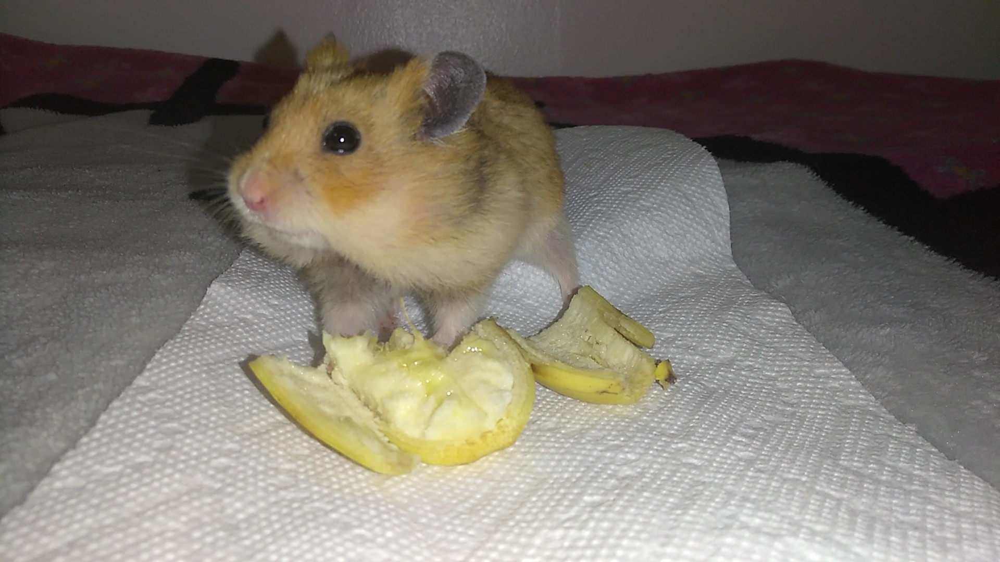
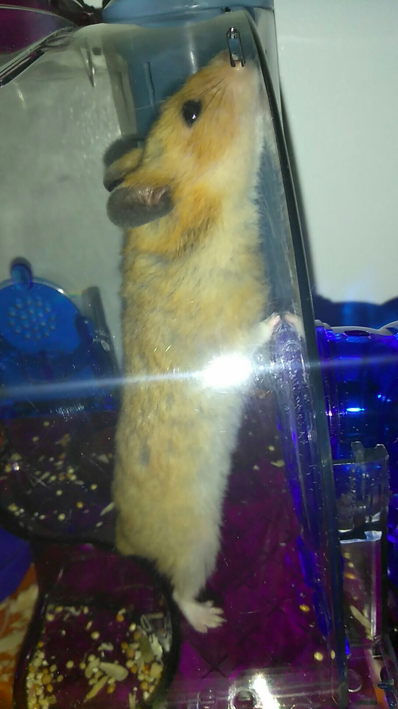

How to properly take care of your precious cat!
Basic supplies:
* Premium-brand cat food
* Food/Water bowl
* Interactive toys
* Brush or Comb
* Safety cat collar with ID tag
* Scratching post or scratching pad
* Litter box and litter
* Cat carrier
* Cat bed or box with warm blanket or towel
Food: Make sure to feed your cat a nutritious diet and fresh water, wash and refill bowls everyday. You can also ask your veterinarian for advice on what your cat can eat.
Housing: Your cat should have their own dry, clean place in your home to rest. Be sure to wash the bedding often. IMPORTANT: DO NOT KEEP YOUR CAT OUTSIDE FOR A LONG PERIOD OF TIME. They can go missing or killed. Be careful!
Identification: If the cat is allowed outside,they must wear a satey collar or ID tag
Toys: Cats don't usually spend their time outdoors like dogs but they're still active animals. Take the time to play with your cat. Also, make sure to cut your cats nails every two to three weeks, make sure to buy a scratch post/pad, cats like to scratch!
Litter Box: Every cat needs a litter box, which should be placed in an accessible area. Make sure to clean the litter box every week!
Grooming: Most cats rarely need a bath but make sure to brush them everyday. It can keep their coat clean and reduce the amount of shedding!
Health: Your cat should see a verterinarian at least once a year for an examination and annual shots, if they are sick they must be checked immediately!
How to properly take care of your hamster!
Basic Supplies:
*Cage/Bedding
*Toys
*Hamster Food
*Food/Water bowl
*Finger Brush
Food:Make sure to feed your hamster daily, their diets can include vegetables and fruits which can be served every other day Be sure to refill their water and food daily!
Cage/Bedding:Make sure they have a dry and clean home, hamsters like to chew, make sure to also add bedding in the cage!
Exercise:Be sure to provide an exercise wheel or ball, also when they're in the ball make sure to supervise them!
Grooming:Hamsters are naturally clean, you will often see them grooming themselves. However it is not a good idea to wash a hamster at all, it can be dangerous, but you can brush them!
Health: Be sure to take your hamster to a vet annually, or take them immediately if they have display any odd symptoms such as: Wheezing, Runny nose, irregular eating or drinking, Overgrown front teeth, Bald Patches, Sores on feet or Blood in urine.
Rest in peace my little genji. I love you

